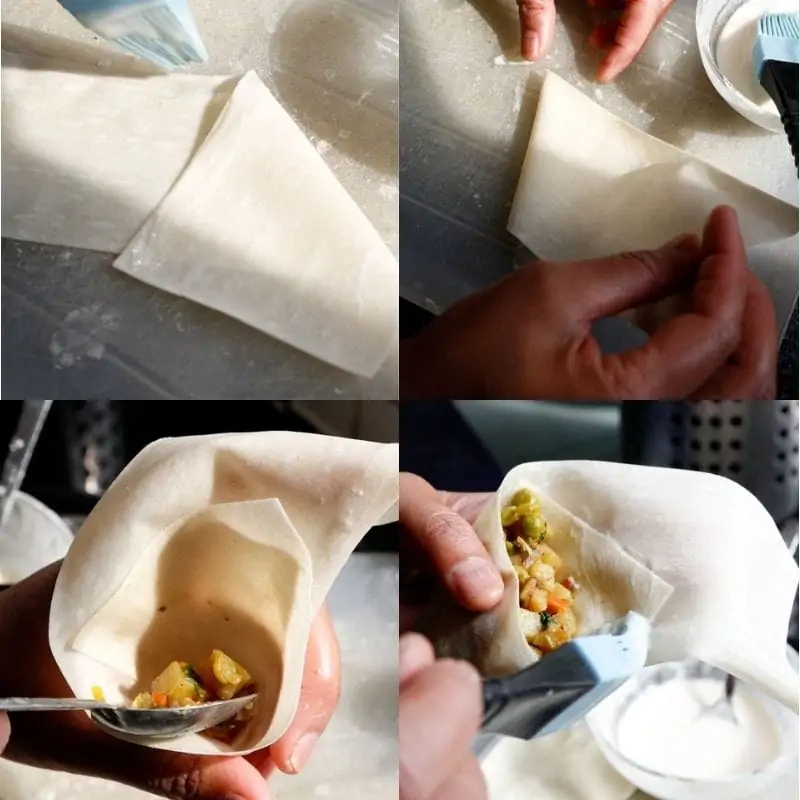

Sambosa with vegetables
from 30 to 60 minutes
➥ Ingredients:
•Potatoes: diced into small cubes. Try to keep the size the same as this way all the potatoes will cook at the same time.
•Carrot: just one, diced into same-sized cubes.
•Peas: for this vegetable samosa recipe, you’ll need frozen peas.
•Sweetcorn: you’ll use tinned sweetcorn, super simple!
•Onions: you can use red or white, pretty much whatever kind of onion you have. Finely diced.
•Green chillies: normally you would only need 2-3, but the chillies my Nani had weren’t spicy at all….so we used 4-5. The rule for the green chillies is to use as many or as few as you like. You could even omit them completely if you’re not a fan of spicy food. You do you!!
•Cumin seeds: just a teaspoon, and once tempered in some oil they’ll become fragrant.
•Ground clove: just a pinch!
•Salt: add to taste.
•Ground turmeric: this recipe only needs a pinch, but it adds a little colour.
Ground cinnamon: just two pinches.
•Citric acid: this is a MUST. Because we’re frying these samosas the filling needs to be pretty dry. Using lemon would make the filling a little soggy, which is not the goal. Tbh, if you don’t have any Citric acid you could also use amchur powder (mango powder), as it also gives a nice tang. Just add a little and see if you need more.
•Sugar: ok here me out, this is a savoury recipe but the brown sugar just balances everything out perfectly. My friends, just trust me!
•Oil: this recipe needs a couple of tablespoons of oil for cooking the veggies, but also oil for frying. We (me and my grandma) used sunflower oil.
•Carrot: just one, diced into same-sized cubes.
•Peas: for this vegetable samosa recipe, you’ll need frozen peas.
•Sweetcorn: you’ll use tinned sweetcorn, super simple!
•Onions: you can use red or white, pretty much whatever kind of onion you have. Finely diced.
•Green chillies: normally you would only need 2-3, but the chillies my Nani had weren’t spicy at all….so we used 4-5. The rule for the green chillies is to use as many or as few as you like. You could even omit them completely if you’re not a fan of spicy food. You do you!!
•Cumin seeds: just a teaspoon, and once tempered in some oil they’ll become fragrant.
•Ground clove: just a pinch!
•Salt: add to taste.
•Ground turmeric: this recipe only needs a pinch, but it adds a little colour.
Ground cinnamon: just two pinches.
•Citric acid: this is a MUST. Because we’re frying these samosas the filling needs to be pretty dry. Using lemon would make the filling a little soggy, which is not the goal. Tbh, if you don’t have any Citric acid you could also use amchur powder (mango powder), as it also gives a nice tang. Just add a little and see if you need more.
•Sugar: ok here me out, this is a savoury recipe but the brown sugar just balances everything out perfectly. My friends, just trust me!
•Oil: this recipe needs a couple of tablespoons of oil for cooking the veggies, but also oil for frying. We (me and my grandma) used sunflower oil.
➥ Instructions:
Making The Spiced Vegetable Samosa Filling…
Start with adding the oil to your pan. Once heated, add in the cumin seeds and cook until fragrant. Add in the onions and cook until it becomes slightly golden. When it comes to the veggies, we want to add in the veggie that takes the longest to cook first….which is obvi the potatoes and carrots! Add them in, cover the pan with a lid and cook for 4 minutes. Add in the ground turmeric and salt. Cook for another 5 minutes or until the potatoes are 50% cooked. Next, mix in the frozen peas, and green chillies and cook for another 5 minutes or so. Add in the sweetcorn, and cook for 2-3 minutes. Add in the citric acid, brown sugar, ground cinnamon and ground clove and cook for another 5-6 minutes or until the potatoes are fork-tender. Mix in the freshly chopped coriander, and then turn off the heat. Normally in Gujarati vegetable samosas, they slightly undercook the potatoes, so when they fry them, they can continue to cook but still have a slight bite. However, this isn’t how my Nani does it. She likes to cook the potatoes a little longer, but just until fork tender. Cooking a little longer allows the flavour of these samosas to be enhanced. Allow to cool. This is crucial as adding hot or even warm samosa filling into the pastry sheets will result in broken and soggy sheets. I don’t have much patience, so to speed this process up, I transfer them into a plate or a wide bowl.
Transforming Pastry Sheets Into Samosas…
Ok, so here’s the thing. My grandma normally uses the pastry sheets that are circular, not these strip ones. The only issue was those circular ones had dairy in them, unlike these strip ones, which were vegan. So we pretty much just followed the directions on the back of the packaging. We also went on youtube to find a video tutorial, and we found this one super helpful. Frying The Samosas… Heat oil in your pot, and to check if the oil is at the perfect temperature, add in a little piece of the samosa pastry. Add the vegetable samosas into the oil, 3-5 at a time. The amount of samosas you add depends on how big your pot is. Fry them on medium for a few minutes or until golden. Transfer onto a plate lined with a kitchen roll. Once they’ve cooled slightly, prop them up so they’re all standing up rather than lying flat. This will help cool them perfectly. Which will result in crispier samosas. Serving Gujarati Vegetable Samosas You can have these samosas for breakfast, lunch or even a snack. There are no rules as to when, or even where you can eat these. Make them for yourself, when you’re entertaining… or even for mothers day brunch. What to serve with these samosas? Chutney. Chutney. Chutney. Seriously, it’s a MUST. I personally love a good green chutney. Dunk them in after each bite (sorry anti-double-dipping folks) and be gifted with the taste of Gujarat from your own home. How To Store These Samosas I’ll honestly be shocked if you have any samosas left. But whatever reason you do, place them in an airtight container and refrigerate. These samosas can be reheated but I kinda like having them cold sometimes too.
Start with adding the oil to your pan. Once heated, add in the cumin seeds and cook until fragrant. Add in the onions and cook until it becomes slightly golden. When it comes to the veggies, we want to add in the veggie that takes the longest to cook first….which is obvi the potatoes and carrots! Add them in, cover the pan with a lid and cook for 4 minutes. Add in the ground turmeric and salt. Cook for another 5 minutes or until the potatoes are 50% cooked. Next, mix in the frozen peas, and green chillies and cook for another 5 minutes or so. Add in the sweetcorn, and cook for 2-3 minutes. Add in the citric acid, brown sugar, ground cinnamon and ground clove and cook for another 5-6 minutes or until the potatoes are fork-tender. Mix in the freshly chopped coriander, and then turn off the heat. Normally in Gujarati vegetable samosas, they slightly undercook the potatoes, so when they fry them, they can continue to cook but still have a slight bite. However, this isn’t how my Nani does it. She likes to cook the potatoes a little longer, but just until fork tender. Cooking a little longer allows the flavour of these samosas to be enhanced. Allow to cool. This is crucial as adding hot or even warm samosa filling into the pastry sheets will result in broken and soggy sheets. I don’t have much patience, so to speed this process up, I transfer them into a plate or a wide bowl.

Transforming Pastry Sheets Into Samosas…
Ok, so here’s the thing. My grandma normally uses the pastry sheets that are circular, not these strip ones. The only issue was those circular ones had dairy in them, unlike these strip ones, which were vegan. So we pretty much just followed the directions on the back of the packaging. We also went on youtube to find a video tutorial, and we found this one super helpful. Frying The Samosas… Heat oil in your pot, and to check if the oil is at the perfect temperature, add in a little piece of the samosa pastry. Add the vegetable samosas into the oil, 3-5 at a time. The amount of samosas you add depends on how big your pot is. Fry them on medium for a few minutes or until golden. Transfer onto a plate lined with a kitchen roll. Once they’ve cooled slightly, prop them up so they’re all standing up rather than lying flat. This will help cool them perfectly. Which will result in crispier samosas. Serving Gujarati Vegetable Samosas You can have these samosas for breakfast, lunch or even a snack. There are no rules as to when, or even where you can eat these. Make them for yourself, when you’re entertaining… or even for mothers day brunch. What to serve with these samosas? Chutney. Chutney. Chutney. Seriously, it’s a MUST. I personally love a good green chutney. Dunk them in after each bite (sorry anti-double-dipping folks) and be gifted with the taste of Gujarat from your own home. How To Store These Samosas I’ll honestly be shocked if you have any samosas left. But whatever reason you do, place them in an airtight container and refrigerate. These samosas can be reheated but I kinda like having them cold sometimes too.